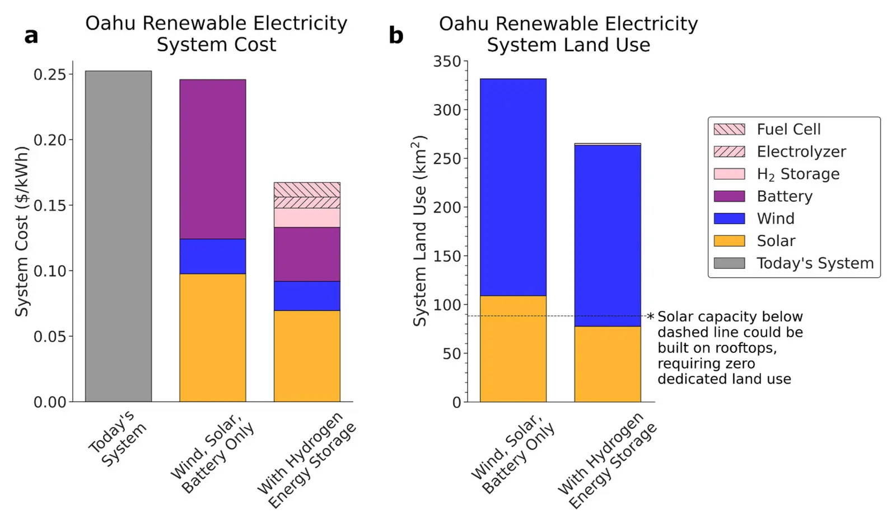

Oahu as a case study for island electricity systems relying on wind and solar generation
Key finding. Using 14 consecutive years of hourly wind, solar and demand data and current asset costs, a least-cost wind-solar-battery-hydrogen system meeting 100% of Oahu's hourly demand would cost $0.1673 per kilowatt-hour and occupy 265 square kilometres, against the $0.2126 to $0.2987 per kilowatt-hour that Oahu's petroleum-dominated system cost from October 2022 to September 2023.

What question did this research address?
Hawaii has legislated that all its electricity come from renewable resources, and Oahu currently burns imported petroleum to make it. Islands are the hard case for wind and solar: no neighbours to import from, no transmission to average weather over, and a small land area.
This paper asked whether wind and solar with storage could meet every hour of Oahu's demand across many years of real weather, what it would cost against the petroleum system it would replace, and how much of the island it would occupy.
What did we find?
The system is required to meet 100% of hourly averaged demand across all 14 years, so it is sized against a long record of real variability rather than a representative year.
With batteries as the only storage, the least-cost system costs $0.2458 per kilowatt-hour and takes 332 square kilometres — 21.4% of Oahu's land area. That is already inside the range the petroleum system costs today.
Adding hydrogen as a second, long-duration store improves both numbers at once: cost falls to $0.1673 per kilowatt-hour and land use to 265 square kilometres, or 17.1% of the island.
Cheaper and smaller together is the notable part. Long-duration storage substitutes for overbuilt generation, so the land that would have gone under panels and turbines is not needed.
All of this uses current asset costs, not projected ones, so the comparison does not depend on assumed future cost declines.
Why does it matter?
Islands are usually treated as the place where wind and solar are hardest and most expensive. Here the isolated, petroleum-dependent case is where they are already cheaper — because the incumbent is imported oil rather than cheap domestic gas or coal.
Land is the binding constraint on an island, and it is the constraint that long-duration storage relieves. That reframes hydrogen storage as a land-use technology as much as a reliability one.
The conclusion generalises to other isolated regions with similar resources and a reliance on imported petroleum, which is a large fraction of the world's islands and remote grids.
Citation, data, and code
Dominic Covelli, Edgar Virgüez, Ken Caldeira, and Nathan S. Lewis (2024). Oahu as a case study for island electricity systems relying on wind and solar generation. Applied Energy 375, 124054.
Related
- What does a reliable electricity system built on wind and solar actually need?
- Can wind and solar power reliably meet electricity demand?
- Role of long-duration energy storage in variable renewable electricity systems (Dowling et al., 2020)
- The influence of regional geophysical resource variability on the value of single- and multistorage technology portfolios (Li et al., 2024)
- Geophysical constraints on the reliability of solar and wind power worldwide (Tong et al., 2021)